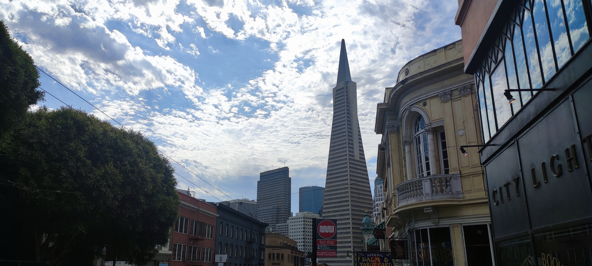
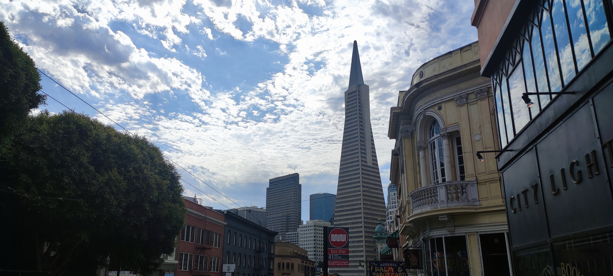

这是一辆基于雪佛兰 1967年 四驱款C10型号的 24:1 皮卡车模型。
在它的货床上，我安装了一台树莓派单板电脑、MIPI 摄像头、激光云台和一个 OLED 显示器。
我喜欢在这辆小车上做各种与Linux内核设备相关项目，拍照留念。


Cyber-truck
这是一辆基于雪佛兰 1967年 四驱款C10型号的 24:1 皮卡车模型。
在它的货床上，我安装了一台树莓派单板电脑、MIPI 摄像头、激光云台和一个 OLED 显示器。
我喜欢在这辆小车上做各种与Linux内核设备相关项目，拍照留念。
Santa Barbara • 加利福尼亚
2017 至 2021 年间我在圣巴巴拉县的 Isla Vista 小镇居住了四年。
在工作和学习最紧张的时候，我喜欢在海滩边跨着浪花漫步，听着海潮的诉说，深深呼吸。
夕阳西下，篮紫色的天空与泛红的太平洋交相辉映，空气里是海水的味道。
并且很多野生动物，包括海鸥、乌鸦、蜂鸟、喜鹊、浣熊是这里街边的常客，这些都成为了我对南加州最美好的回忆。


Pittsburgh • 宾西法尼亚
寒冬腊月的匹兹堡，街道上覆盖着几英寸厚的积雪。雾气缭绕的天空，光颓的树林，和冰冷的雷雨，萦绕在这压抑的钢铁城市。
这座城市的人总是很有人情味；各处古老的建筑透出一股浓厚的历史底蕴。
然而，生活学习在这里的两年里，恶劣的天气，严重的污染和拥挤的交通令我更加向往更好的地方。


Baltimore • 马里兰
巴尔的摩以其内港、国歌的创作、埃德加爱伦坡、约翰霍普金斯大学、大西洋蓝蟹等而闻名。
然而，这个城市因其高犯罪率令我总是担心出行的安全，所以我总是十分小心。
我非常喜欢约翰霍普金斯大学 —— 33 街的 Nolan's 食堂， Lighting of the Quads 烟火秀， 和 乔治·皮博迪图书馆等等都给我留下了非常好的印象。
秋天，松鼠在校园里无处不在，草地里穿梭觅食。我非常喜爱观察这些可爱的小动物们。
我记得图书馆门口有家非常不错的咖啡厅，叫做 Brody Learning Commons 咖啡厅。我最爱的咖啡是有个神奇的名字，叫做 the Jitter Machine。


San Francisco • 加利福尼亚
三藩市以金门大桥、唐人街、海狮，和美国最早的移民城市而闻名。
2022 年夏天，我驾车在旧金山市和圣克拉拉县的硅谷进行了一次短途公路旅行。
这个科技与文化繁荣的城市，我很想要以后再次回来看看。


 
